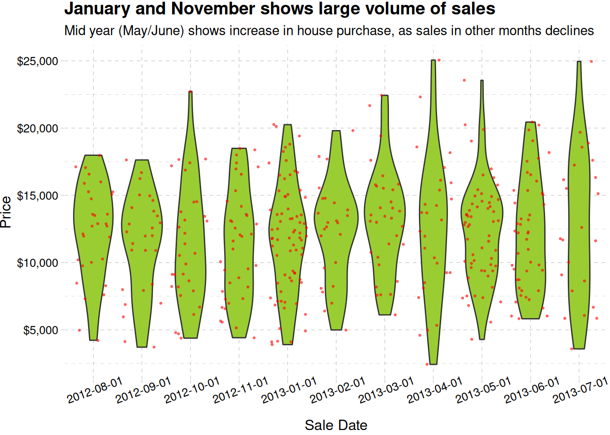
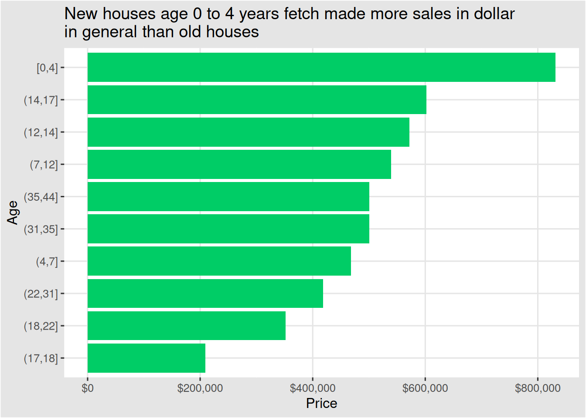
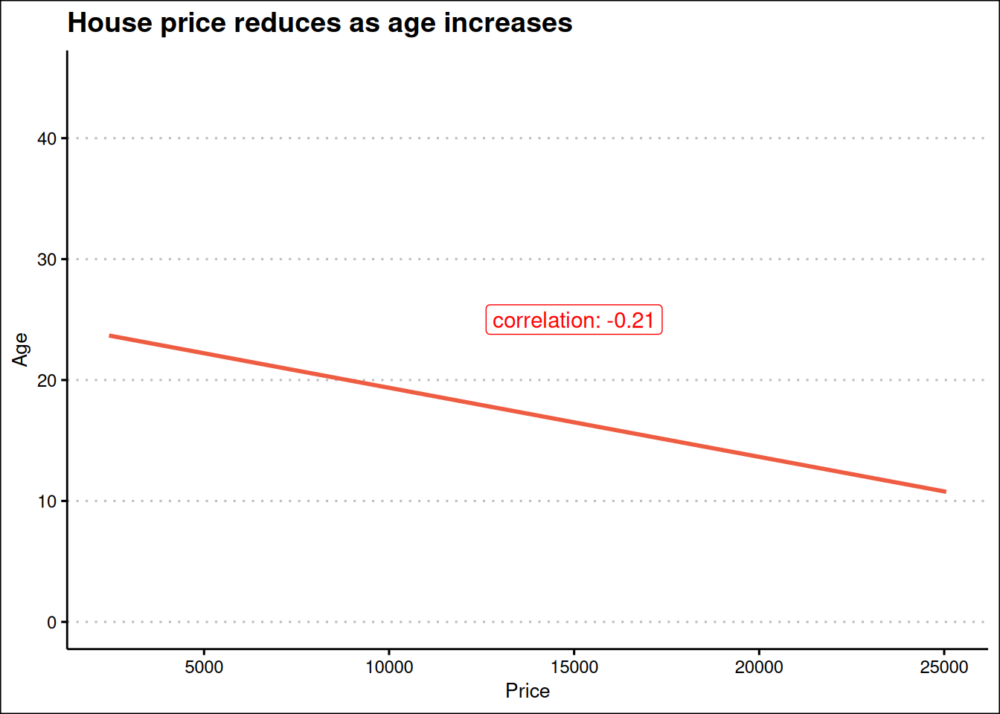
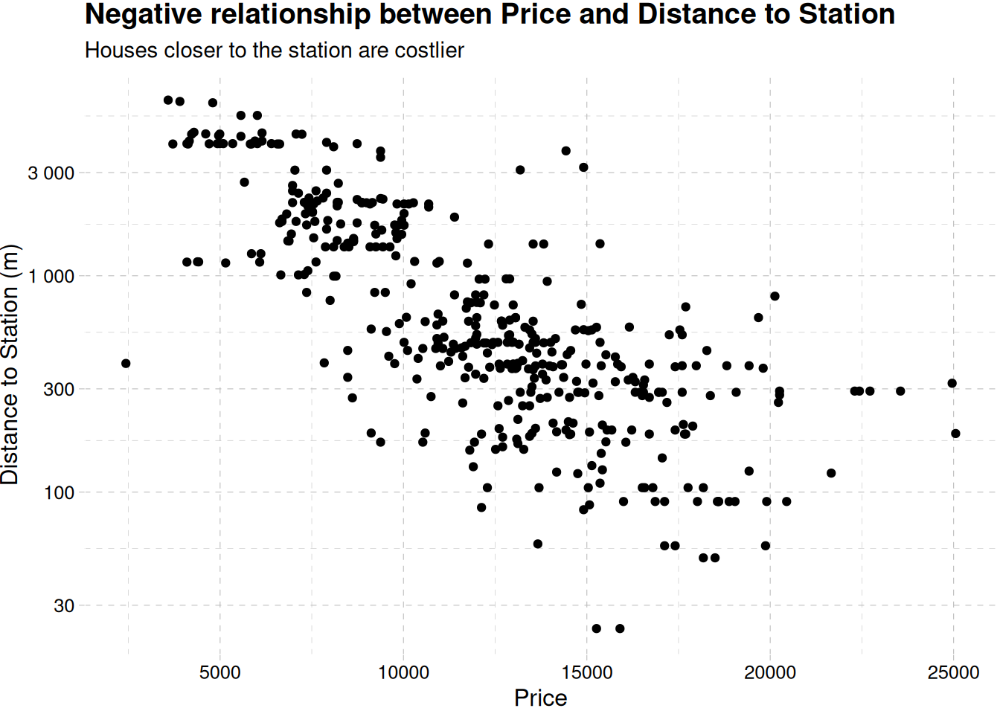
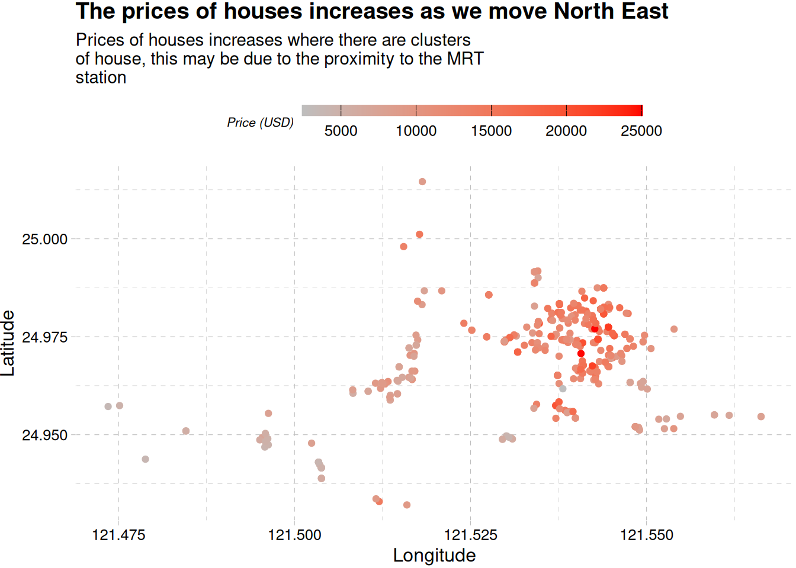
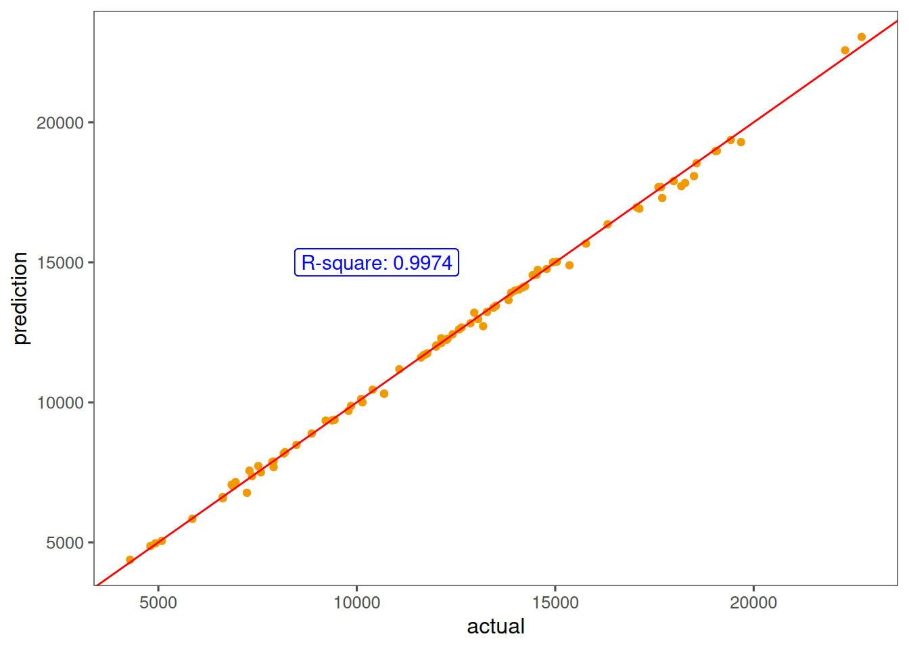

Real Estate Prediction Using Boosting Tree (XGBoost)
Machine Learning
XGBoost
Published
February 10, 2024
Introduction
The market historical data set of real estate valuation are collected from Xindian Dist., New Taipei City, Taiwan. This project aims to predict price of houses in Xindian, New Taipei given some characteristics of buildings.
To get a better grasp of the pricing, the US Dollar will be used, and the size of the houses in square meter will be calculated to give an idea of how big the properties are
The most house price ranges between 11000 to 14000 dollars Figure 1. The distribution shows there seems to be an outlier in our data. fig-outlier shows the outlier
We will continue our EDA now that the outlier has been removed
Multivariate
Show the code
ggplot(real_estate, aes(factor(sale_date), price_usd)) +geom_violin(fill ="olivedrab3") +geom_jitter(aes(y = price_usd), size =0.5, alpha =0.5, col ="red") +theme(axis.text.x =element_text(angle =20)) +labs(x ="Sale Date", y ="Price", title ="January and November shows large volume of sales",subtitle ="Mid year (May/June) shows increase in house purchase, as sales in other months declines" ) +scale_y_continuous(label =label_dollar()) +theme_pander()

Monthly price distribution of houses, there are some traces of seasonality
Show the code
ggplot(real_estate, aes(fct_reorder(cut_number(age, 10), price_usd, .fun = sum), price_usd)) +geom_col(fill ="springgreen3") +labs(x ="Age",y ="Price",title =str_wrap("New houses age 0 to 4 years fetch made more sales in dollar in general than old houses", width =60) ) +scale_y_continuous(label =label_dollar()) +coord_flip() +theme_igray()

Show the code
correlation <-cor(real_estate$price_usd, real_estate$age)ggplot(real_estate, aes(price_usd, age)) +geom_smooth(method ="lm", se = F, col ="tomato2") +expand_limits(y =c(0, 45)) +labs(x ="Price",y ="Age",title ="House price reduces as age increases" )+annotate(geom ="label",label =paste("correlation:", round(correlation, 2), sep =" "),x =15000, y =25, col ="red" ) +theme_clean()
`geom_smooth()` using formula = 'y ~ x'

Figure 3: Correlation between age and price
Figure 3 shows the relationship between house price and the age of houses
Show the code
ggplot(real_estate, aes(price_usd, distance_to_station)) +geom_point() +scale_y_log10(label =label_number()) +labs(x ="Price",y ="Distance to Station (m)",title ="Negative relationship between Price and Distance to Station",subtitle ="Houses closer to the station are costlier" ) +theme_pander()

Figure 4: Correlation between price and distance to station
Show the code
ggplot(real_estate, aes(longitude, latitude, col = price_usd)) +geom_jitter() +labs(col ="Price (USD)",x ="Longitude",y ="Latitude",title ="The prices of houses increases as we move North East",subtitle =str_wrap("Prices of houses increases where there are clusters\ of house, this may be due to the proximity to the MRT station", width =55) ) +scale_colour_gradient(low ="gray", high ="red") +theme_pander() +theme(legend.position ="top") +guides(color =guide_colorbar(barwidth =15, barheight =1/2, ticks.colour ="black", title.position ="left", title.theme =element_text(size =8)))

Houses get expensive as we move in a northeast direction,
All the factors shows strong relationship with the price of the building
While size, number of convenience store close to the building and the position of the building, i.e., longitude and latitude are positively correlated to the price of a building, the older a building, and the farther it is from the MRT station the more likely it reduces in price.
Model Development
Before we begin modeling, we need to remove some variables that might not be a big influence, this include:
sales_date, as there is just a year span of data, it is better we extract just the month use that
price, we have price in US Dollar, already, we do not need the price in Taiwanese dollars.
Show the code
real_estate <- real_estate |>mutate(month =month(sale_date),.before = age ) |>select(-c(sale_date, price))head(real_estate)
Given our choice of model, XGBoost, a tree-based model, a lot of preprocessing is not required, we can going to dive right into our model specification, and tune a lot of the model hyperparameter to reduce the chances of over-fitting and under-fitting.
Next, we have to set up some values for our hyperparameter, we don’t want to exhaust our computing resource, and face the risk of overfitting. We will use the Latin Hypercube grid as this approach can be more computationally efficient than a regular grid, especially when there are many hyperparameters to tune. Random selection can also introduce diversity into the search process.
Since mtry depends on the number of predictors, it had to be tuned differently Table 2.
NOW WE TUNE. We will use our resamples, the tuneable workflow, and the Latin grid of parameters which we have to try get the best value. To also speed up the process, we will enable parallel computing
Warning in geom_label(aes(x = 10500, y = 15000, label = "R-square: 0.9974"), : All aesthetics have length 1, but the data has 85 rows.
ℹ Please consider using `annotate()` or provide this layer with data containing
a single row.

Figure 6: Model performance
Figure 6 shows a good performance of the model. For future prediction on a similar data in the region we extract the model and save it for later use.
This project shows the capabilities of R, and the XGBoost algorithm in real estate use. While the model was built to predict price, it could be made better if a time component is give. Given the data used for this project, a time component is ill-advised as seasonality, and other time related components will not be properly studied by the algorithm.